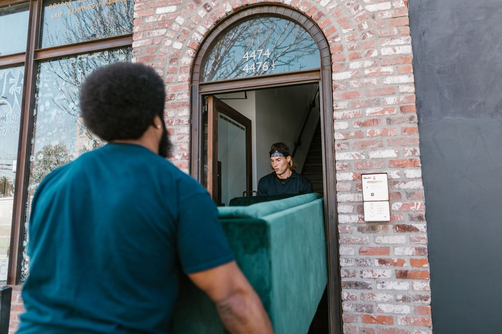

Almost no piece of household furniture is too heavy for two people. What makes furniture removal hard is the path out of the house: the turn at the top of the stairs, the doorway that is narrower than the hallway, the banister nobody wants to scratch. We handle the carrying and the path. You point at what goes.
The couch that has been in the front room since 2011 is not going to move itself, and the reason it is still there is almost never that it is heavy.
The problem is the path, not the weight
People plan a furniture haul in their head as a lifting problem. It is a geometry problem.
A sectional came into the house in pieces through a front door with nothing else in the room. It is leaving as an assembled piece, through a hallway that now has a console table in it, past a banister, around a corner where the wall angles in. That corner is where furniture jobs actually get decided.
The other thing people underestimate is what an old sofa has absorbed. A frame that felt manageable when it was new has years of dust in it, a decade of whatever went down between the cushions, and in a lot of houses a slow leak history nobody thinks about until the thing is lifted and the underside comes into view.
None of that is a problem. It is just why the estimate you did in your head while looking at it does not survive contact with the stairwell.
What comes apart and what does not
The rule of thumb is that anything modern and cheap comes apart, and anything old and good does not. Exercise equipment is its own category and follows different rules, which is why treadmills and home gyms get their own walkthrough.
Comes apart easily. Flat-pack dressers, bookshelves, bed frames, desks, most office furniture, sectional couches with clip connectors, dining tables with bolt-on legs. Modular furniture was designed to arrive disassembled, so it can leave the same way. Bunk beds and loft beds belong here too, and clearing the room the kids outgrew walks through how they come down.
Comes apart with work. Older sleeper sofas, which carry a folding steel frame inside them and weigh far more than the same couch without one. Solid wood dressers with drawers that come out but a carcass that will not. Recliners with a mechanism that folds but does not detach.
Does not come apart. One-piece hardwood armoires, older solid dining tables, cast iron tubs, safes, and most pianos. These come out whole or they do not come out, and the answer depends entirely on the doorway and the turn.
If you have something in that last group, say so when you write to us. It changes how a crew plans the job and how many people show up. We would much rather know before anybody is standing in your driveway.
Do not take a door off before you call. People try to help by pulling the door and hinge pins out of the frame ahead of time. Nine times out of ten the door was not the constraint, and now you have a door leaning in the hallway and a job that is harder to path. Leave it. If a door genuinely has to come off, the crew will pull it and hang it back.
A few items sit outside ordinary furniture entirely, including pianos, slate pool tables and anchored safes. Those are handled in piano, pool table and safe removal.
Where the furniture actually goes
This is the part people ask about most once the couch is on the trailer.
Anything genuinely usable goes to local donation partners first. That is the default, not a favor, and it is how a load stays out of a landfill. Habitat for Humanity ReStore locations accept furniture and building materials, and their donate goods page is the right place to read what a specific location will take, since it varies by store. When the furniture is coming out because somebody needs the floor space for equipment, the order of operations changes, and that is covered in clearing a room for a hospital bed or a wheelchair.
Be realistic about the bar, though. Donation centers turn down more furniture than people expect: anything torn, stained, water damaged, smoke damaged, missing hardware, or upholstered and unsellable. We are haulers, not appraisers, and we are not going to tell you a sofa is a treasure when it is not. The longer version of who takes what around here is in where to donate furniture in DFW.
What cannot be donated gets separated rather than dumped whole. Metal frames and bed rails go to a metal recycler. Cardboard and clean wood have their own destinations. Texas keeps a general starting point at TCEQ recycling, and the EPA's durable goods data is a fair look at how much furniture actually moves through this stream nationally. Our stated goal is diverting more than half of every load away from a landfill, and the sorting is how that happens. The full walkthrough is in where your junk goes after pickup.
When the furniture in question is filling a room you need back for a guest, the timing matters as much as the carry. That is covered in turning the spare room back into a guest room.
Before you pay anyone, check the free route
Sometimes the city handles it and you should know that before you spend money.
Most cities in the northern suburbs run bulky waste collection on a published schedule, and furniture is usually on the accepted list. Plano spells out exactly what qualifies at bulky waste accepted items, and the neighboring cities run similar programs with their own rules.
Two things usually decide whether the free route works for you. The first is timing, because bulky collection runs on a set schedule and if you just missed yours you are waiting. The second is whether you can get the thing to the curb yourself, which loops right back to the stairwell problem.
Mattresses have their own wrinkle worth knowing about, and it is covered separately in mattress disposal in DFW. Texas has no statewide mattress recycling program, so where a mattress can go is narrower than people assume.
If you're in Plano and it's a full room rather than one piece, how a Plano pickup usually goes lays out what a crew there typically hauls in one trip.
We would rather tell you the free option exists and lose the small job than take money you did not have to spend.
How we run a furniture pickup
You send photos of the room. A crew comes and looks at it, and you get a firm number before anything is lifted, with disposal already included. The quote is the bill.
Then you point, we carry, we sweep. You do not carry anything to the curb, you do not need to be strong enough to help, and the spot where the piece was gets cleaned up before we leave. Interior pickup is the normal job, not something extra.
Our own crew does the work, not gig labor hired off an app that morning. The full service page is furniture removal.
We run pickups seven days a week across Plano, Allen, Frisco, McKinney, Richardson, Little Elm, Prosper, The Colony, Wylie and Fairview. Call before noon and the same afternoon is typical, though typical is the honest word rather than a promise. We clear out an old mattress in Allen and get a couch out the door in Frisco on that same schedule. Send us a photo and we will quote it before anything moves.
Frequently asked questions
Does the furniture need to be at the curb already?
No. We carry it out of wherever it is, including upstairs bedrooms and attics. Curbside is easier, but it is not required and it does not change how the job works.
Will you take a couch apart to get it out?
When that is the only way, yes. A crew makes that call on site, and it is a last resort rather than a first move. Once a piece is cut down it cannot be donated, so we try the path first.
Do you take mattresses and box springs?
Yes. They go with everything else on a normal pickup. What happens to them afterward is more limited than people expect, which is worth reading about before you assume a mattress gets recycled.
What about a piano or a safe?
Tell us before you book. Those are the two items where the answer depends on the exact doorway and stair path, and it changes how many people we send.
Can I donate it myself instead?
Yes, and if the piece is in good shape you probably should. Call the location first and read their accepted list, because most turn down anything torn, stained, or water damaged.
If a piece of furniture needs to leave the house and nobody in the house can carry it, that is the job. The rest of what we haul is on the services page. There is no rush on our end.